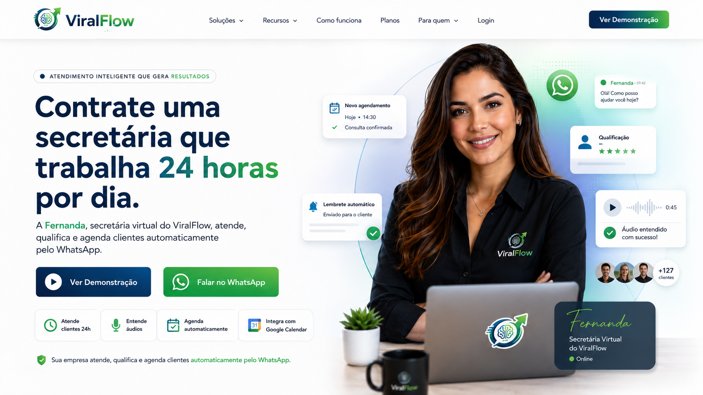

Contrate uma secretária que trabalha 24 horas por dia
A Fernanda atende, qualifica e agenda clientes automaticamente pelo WhatsApp.
Quantos clientes sua empresa perde por não responder rápido?
Todo dia, empresas deixam oportunidades escaparem por demora no WhatsApp, falta de retorno e agenda desorganizada.
Mensagens sem resposta
O cliente chama, espera, perde o interesse e procura outro atendimento.
Atendimento fora do horário
Muitas oportunidades chegam à noite, no almoço ou no fim de semana.
Agenda desorganizada
Horários perdidos, remarcações manuais e falta de confirmação atrapalham a rotina.
A secretária virtual inteligente criada pelo ViralFlow.
Fernanda conversa com seus clientes pelo WhatsApp, entende mensagens, coleta informações importantes e ajuda sua empresa a nunca perder uma oportunidade.
- ✅ Atendimento humanizado
- ✅ Respostas rápidas
- ✅ Qualificação automática
- ✅ Agendamentos organizados

Muito mais do que respostas automáticas.
A Fernanda acompanha seus clientes durante todo o atendimento, desde a primeira mensagem até o agendamento.
Responde WhatsApp
Atende clientes rapidamente e mantém conversas naturais.
Entende Áudios
Interpreta mensagens de voz sem perder contexto.
Agenda Compromissos
Marca horários automaticamente na sua agenda.
Reagenda e Cancela
Mantém os compromissos organizados sem esforço.
Qualifica Clientes
Coleta informações importantes antes do atendimento.
Atende 24 Horas
Nunca deixa uma oportunidade passar.
Simples para o cliente. Inteligente para sua empresa.
Cliente envia mensagem
O cliente entra em contato pelo WhatsApp.
Fernanda atende
Responde dúvidas e entende a necessidade.
Coleta informações
Organiza os dados necessários.
Agenda automaticamente
Confirma e registra o compromisso.
Menos mensagens perdidas. Mais clientes atendidos.
O ViralFlow foi criado para transformar conversas no WhatsApp em oportunidades reais de atendimento, agendamento e venda.
24h
Atendimento disponível todos os dias, inclusive fora do horário comercial.
+ Agendamentos
Clientes conduzidos com mais rapidez até a confirmação do horário.
- Retrabalho
Menos mensagens repetidas, menos esquecimentos e mais organização.
+ Velocidade
Respostas instantâneas para quem chama sua empresa no WhatsApp.
Veja como a Fernanda atende um cliente na prática.
A conversa acontece de forma simples, natural e objetiva. O cliente chama no WhatsApp, a Fernanda entende o pedido e conduz até o agendamento.
Quero ver funcionandoConectado às ferramentas que sua empresa já usa.
O ViralFlow combina WhatsApp, inteligência artificial e automações para transformar mensagens em atendimentos organizados.
Atendimento direto no canal onde seus clientes já conversam.
Google Calendar
Agendamentos, cancelamentos e remarcações sincronizados.
Inteligência Artificial
Respostas naturais, qualificação de clientes e entendimento de mensagens.
Automações
Fluxos inteligentes conectando atendimento, agenda e notificações.
Mais que uma automação. Uma secretária virtual pronta para trabalhar.
⚡ Atendimento Imediato
Seus clientes recebem resposta em segundos.
🧠 Inteligência Real
Entende contexto, áudio e intenção do cliente.
📅 Agenda Organizada
Agendamentos, cancelamentos e reagendamentos automáticos.
💚 Atendimento Humanizado
Conversas naturais sem aparência de robô.
Uma secretária virtual para negócios que vivem de atendimento.
O ViralFlow pode ser adaptado para diferentes segmentos que recebem clientes pelo WhatsApp.
Barbearias
Agenda cortes, barba e horários automaticamente.
Advogados
Qualifica interessados e agenda consultas com organização.
Imobiliárias
Atende leads, coleta preferências e agiliza o contato comercial.
Clínicas
Marca consultas, confirma horários e reduz faltas.
Autopeças
Coleta dados do veículo e organiza o primeiro atendimento.
Prestadores de serviço
Responde pedidos, coleta dados e transforma mensagens em oportunidades.
O antes e depois de ter a Fernanda na sua empresa.
❌ Antes
- Mensagens sem resposta
- Perda de clientes
- Agenda desorganizada
- Atendimento manual
- Retrabalho constante
✅ Depois
- Atendimento imediato
- Mais oportunidades aproveitadas
- Agenda organizada
- Processos automatizados
- Mais produtividade
Tire suas dúvidas sobre o ViralFlow.
O ViralFlow funciona no meu WhatsApp?
Sim. O atendimento acontece através do WhatsApp da sua empresa.
A Fernanda entende mensagens de áudio?
Sim. Ela pode interpretar áudios enviados pelos clientes e continuar o atendimento normalmente.
Posso personalizar para meu negócio?
Sim. O atendimento pode ser adaptado para diferentes segmentos.
Funciona com Google Calendar?
Sim. Agendamentos, cancelamentos e reagendamentos podem ser sincronizados automaticamente.
Preciso ficar online o tempo todo?
Não. A Fernanda atende os clientes automaticamente 24 horas por dia.
Criada para negócios que precisam responder rápido.
A Fernanda foi pensada para resolver problemas reais de atendimento, agendamento e organização no WhatsApp.
“Ideal para barbearias que recebem muitos pedidos de horário e não conseguem responder todos rapidamente.”
💈 Barbearias“Perfeita para advogados que precisam qualificar interessados antes de marcar uma consulta.”
⚖️ Advocacia“Ajuda imobiliárias a atender leads no momento em que eles demonstram interesse.”
🏠 ImobiliáriasColoque a Fernanda para atender seus clientes ainda hoje.
Veja como uma secretária virtual pode organizar seu atendimento, qualificar clientes e gerar mais agendamentos pelo WhatsApp.